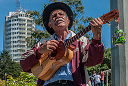

En venezuela existe mucha musica tipica
Es una música muy popular en Venezuela es la Gaita. Este género, originado en el estado Zulia, es muy popular durante la época navideña.
El joropo es un género musical y danza tradicional de Venezuela y Colombia. Su diversidad se manifiesta en distintas tipologías subregionales
Se denomina vals venezolano a la variación, adaptación e interpretación de dicho género musical a los estándares musicales y culturales de Venezuela.
